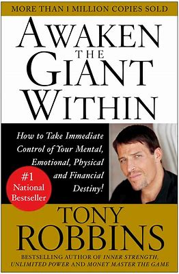
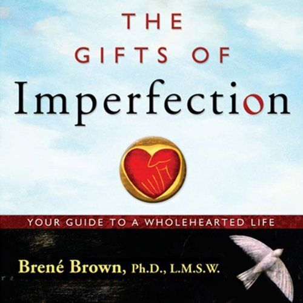
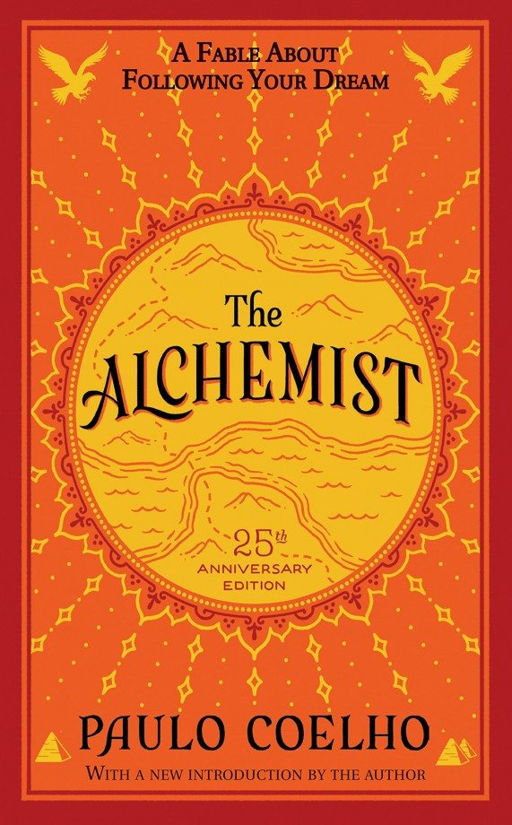

Book Gallery
Think and Grow Rich

By Napolean Hill
Think and Grow Rich is the combined wisdom from more than 500 of America’s most successful individuals. Their
insights were then narrowed down into 13 principles and contribute to what Hill refers to as an overall
“Philosophy of Achievement.”
Awaken the Giant Within

By Tonny Robbins
Any time you want to make a change in your life, the first thing you need to do is to raise your standards
and believe you can meet them.
We must change our belief system and develop a sense of certainty that we can and will meet the new
standards before we actually do.
Big Magic
By Elizabeth Gilbert
Big Magic is the book that’ll give you the courage you need to pursue your creative interests by showing you
how to deal with your fears, notice ideas and act on them and take the stress out of creation.
The Monk Who Sold His Ferrari
By Robin Sharma
Robin Sharma’s The Monk Who Sold His Ferrari, originally published in 1999, is a self-help book that fits
snugly into the “business fable” pool of literature, which includes books containing motivational advice
intended primarily to assist people in their careers or to improve specific aspects of the workplace, like
management culture.
The Gifts of Imperfection

By Brene Brown
The Gifts of Imperfection, teaches us not to change ourselves to adapt to expectations, instead, we should
embrace and engage with our imperfections. The core insights center on empathy, understanding, and adopting
"wholehearted living," so that we start living for ourselves, and not for other people.
The Alchemist

Paulo Coelho
The Alchemist (Portuguese: O Alquimista) is a novel by Brazilian author Paulo Coelho which was first
published in 1988. Originally written in Portuguese, it became a widely translated international
bestseller.[1][2] An allegorical novel, The Alchemist follows a young Andalusian shepherd in his journey to
the pyramids of Egypt, after having a recurring dream.